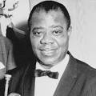

| Name | Most Popular Song | Birth Year | Picture |
|---|---|---|---|
| Louis Armstrong | What a Wonderful World | 1901 |  |
| Miles Davis | So What | 1926 | |
| Aruro Sandoval | La Virgen de Macarena | 1949 | |
| Wynton Marsalis | The End of a Love Affair | 1961 | The Greatests of All Time |
These artists are considered to be the most influential trumpet players of all time. Each of them has their unique style and left a mark in the world of jazz.
Amrstrong served as one of the ambassadors of jazz. His career spanned five decades, as well as numerous genres of jazz. Not only was Armstrong a renouned jazz trumpeter, but his unique voice became instantly recognizable, opening him up to the world of jazz vocals. From playing in bands like the Red Onion Jazz Babies, to the famous Louis Armstrong and his hot five, Armstrong would go on to lead one of the most successful solo jazz careers in history.
Davis was born in Illinois, which is where he developed his love of music. He was accepted into Juliard to study music, but would ultimately leave the schoolot make his professional debut in saxophonist Charlie Parker's bebop quintet. It is here that Davis' style came to be known. While recording music for Capitol Records, it became known that Davis was suffering from substance abuse. In the mid 1950's Miles signed with Colombia Records and created an album alongside saxophonist John Coltrane and basist Paul Chambers.
Arturo Sandoval became interested in the trumpet at the age of 12, taking classical lessons, later enrolling in the Cuban School of National Arts at just 15 where he studied with a russian classical trumpeter. In the late 1970's Sandoval started a band that would become the famous Afro-Cuban band Irekere. Later in the 70's snadoval met his idol, Dizzy Gillespie, and began to create music with him. After releasing many albums and touring Europe, Sandoval left his band and began to work on his solo work and to record music in Cuba.
Wynton Marsalis was only 6 years old when he started to play the trumpet. This was a result of him growing up in a musical family. Marsalis grew uo in New orleans where his father was a musician himself, as well as a teacher. Wynton's brother was also a jazz muisician. This jumpstart on playing the trumpet proved to be quite advantageous, with Marsalis playing at his local church at 8 years old and in the New Orleans Philharmonic at just 14. Wynton went on to win a grammy for classical recordings. Marsalis' strong background in music opened the opportunity for him to create a jazz program at Lincoln Center. Now, Marsalis is the director of Jazz at Lincoln Canter.